Worm Bin 1 pictures
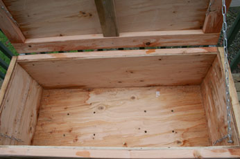

Worm Bin 2 picture
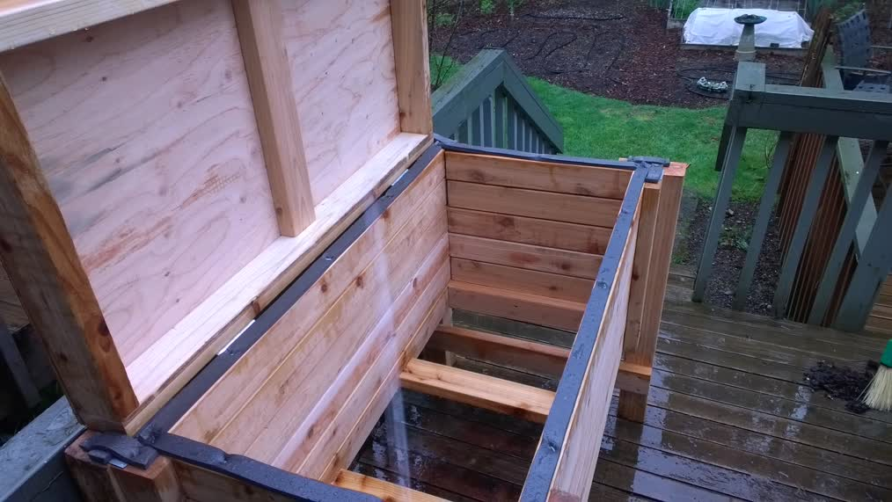
I have the plans as Worm Bin 1 PDF and Worm Bin 2 PDF, the PPT is available as
Worm Bin 1 PPT and Worm Bin 2 PPT.
The following instructions should be used in conjunction with the PDF documents. Worm Bin 1 is quicker and cheaper to make but
(as you can see below) may not last as long. Worm bin 2 is more expensive and hopefully will last twice as long (we will see).
They are both approximately the same size (Worm Bin 2 is more robust, a little taller, deeper and has a bottom drawer).
Before beginning this project please take a look at the following pages. These pages contain things about simple
carpentry I learned. When you are finished you can visit the Main Page:
1) Wood Is Not The Size They say it is, i.e. 2X4 it is (most likely) really 1.5 by 3.5.
2) The right tools are important, and they really
don't cost that much
3) Technique, a few hints and tricks help make the
job go easier.
Worm bins are great for taking your kitchen scraps and turning them into garden fertilizer. They are
also great for growing red wigglers, you may be able to bribe a fisherperson to build it for you
if you down't want to do it yourself. This is
known as Vermicomposting.
An excellent book on this sublect is
Worms Eat My Garbage by
Mary Appelhof. A friend mentioned this book and it has been helpful understanding Vermicomposting. I
saw a small bag of worm casting in the store the other day (maybe a pound or so) for a dollar and a
half. This worm bin can hold a hundred or more pounds worth of worm castings. You do not want to use a
sealer or wood protector on the inside of the worm bin, you don't want those chemicals (ultimately) in your
food. Sealing the top should be OK, but I haven't done that with the one I built. You do not want to seal
the sides or bottom, one of the advantages of wood is that it breathes, allowing moisture and oxygen out. Also
you do not want to use pressure treated wood. These woods contain chemicals like CCA.
Page 1 and 2 - First we obtain the plywood sheet. Typically the plywood sheet will be 8 feet by 4 feet.
You will want to get plywood that is CDX or BC Plywood, exterior grade, good one side. I made a mistake
when I bought my sheet of plywood. I knew that the 4 foot by 8 foot sheet would not fit in my vehicle. I also
knew that the store I bought the sheet at would do a better job of making the initial cuts. I asked them to
cut the board into 4 ea 2 foot by 4 foot pieces. When I got home I realized that I had made a mistake.
That is the reason for page 2 of the instructions :-). If you can get the store to cut the plywood into
the pattern on the first page then you will be ahead of the game.
The BC has a better surface covering than the CD. For a explanation of how Plywood is graded
see How Plywood is graded.
Page 3 - Make the bottom and top of the worm bin. To attach the plywood to the 2 by 4's I used 2 inch
deck screws. I screwed the deck screws in through the plywood down into the 2 by 4's. I later
used some nicer screws and screwed the 2 by 4's into the plywood (i.e. screws on both sides).
Page 4 - Make the front and back of the worm bin in the same manner that you made the top and
bottom. Obviously the front and back are smaller than the top and bottom.
Now screw the front / back / bottom together. You will run the deck screws through the bottom of the
worm bin into the front and back 2 by 4's of the worm bin. You will need 4 inch deck screws to do this,
and they will probably be number 10 screws (this is the width of the screw). You will also need to use
a larger drill bit for the pilot holes (you *ARE* drilling pilot holes for
the deck screws, correct?). Make sure that when you screw the deck screws in the bottom of the worm bin
into the front / back of the worm bin that the front and back are at a 90 degree angle. The sides of the
worm bin will help true this up a little if it isn't prefect.
Page 5 - Now make sides of the worm bin. Again, the plans I did accounted for the fact that I messed up
the initial cut on the plywood. But it looks fine to me :-). Again, I drove the deck screws through the
plywood then into the 2 by 4's. This gives the entire box more strength. If you need more than 6 inches
of clearance (or less than that) then you can make adjustments to the 1.5 X 3.5 X 20.5 Inch boards.
Page 6 - Now attach the sides to the half box you have already created (the bottom / front / back
structure). Again, when you attach the sides they will help true up the front / back if you didn't get
them perfectly aligned with the bottom. I used the 4 inch deck screws to attach the sides to the bottom /
front / back structure. Now attach the top with the hinges.
Page 7 - Now put the chains on and you are done. I also nailed a strip of fuzzy 1 inch insulation material
along the sides to the lid to close the gap between the lid and the box. This helps keep flies out of the
bin. This whole box took me a day to complete.
The first worm bin (Worm Bin 1) built built from untreated pine lasted 6 years before it needed repair, then completely fell apart. You can see
LOTs of wood rot (looking inside) 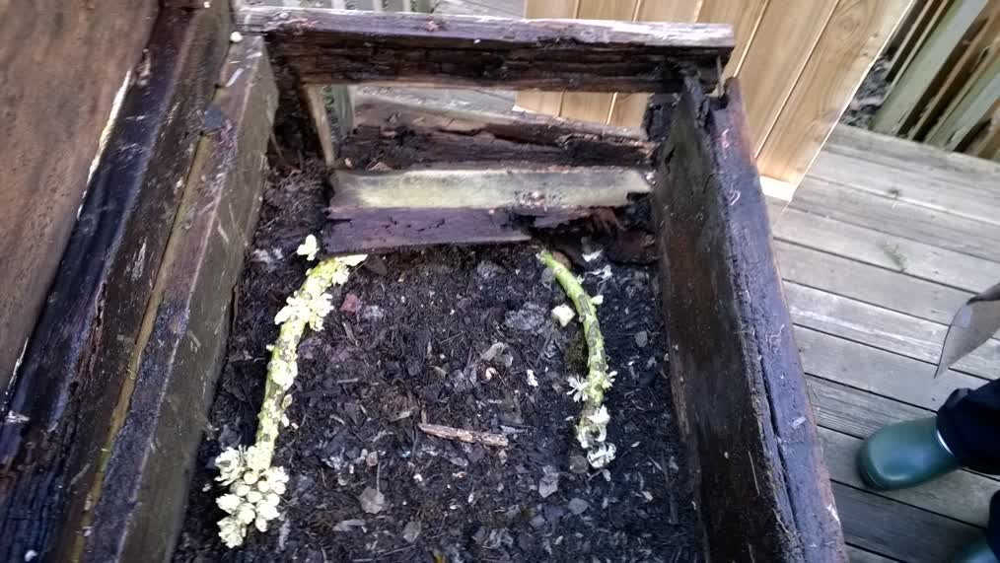
and a closeup of the wood shows more
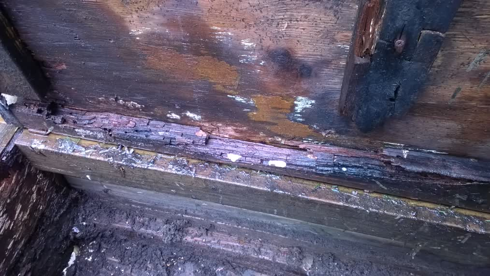
The plywood is GONE
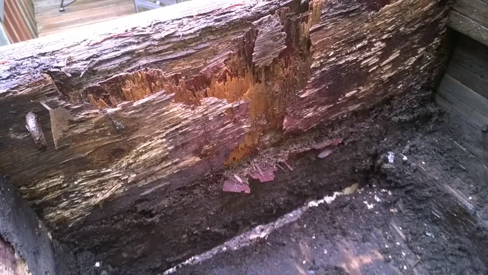
but the worms love it
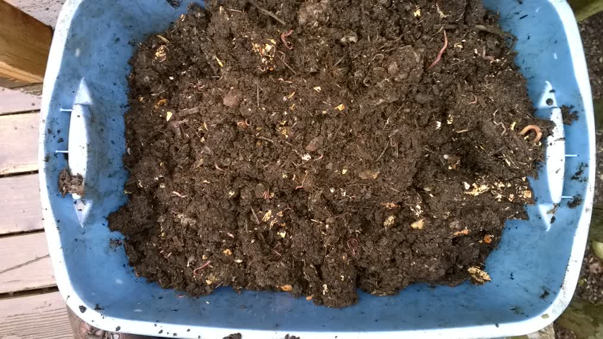
So I built the second Worm Bin. This worm bin has a few additional features. It is built from UNTREATED Cedar 2 by 4s. You
still have plywood for the top and the drawer. The legs are Cedar 4 by 4s. In addition there is a drawer that you can remove
and above the drawer is a frame with a mesh screen. The mesh screen (currently 0.25 inch mesh) should allow worm castings to
fall through to the drawer, that is the plan anyway. The instructions:
Page 1 First we obtain a FIR (or Cedar if you can get it, definitely not pine) plywood half sheet, it should be 4 foot
by 4 foot. Ask the store to cut it in half so that you only need to cut 4 inches off the end of one of them to make the drawer.
The other 2 foot by 4 foot sheet will be ready for you to use to make your top lid.
Page 2 - Make the top (lid) and bottom mesh deck of the worm bin. To attach the plywood to the 2 by 4's I used 1 inch
deck screws. I screwed the deck screws in through the plywood down into the 2 by 4's. For the Mesh deck you just assemble
the wood 2 by 4s, the mesh is attached as the very last thing to do.
Page 3 - Make the front, back and sides of the worm bin by cutting the 5 Ea. boards and scrwing them to the 21.5 inch boards.
Make sure that there is the space of a deck screw between all the side boards to allow for the wood to swell as it gets wet
and to allow for air flow. Note that I used four small wood pieces to line up the sode boards before screwing the 21.5 inch boards on top:
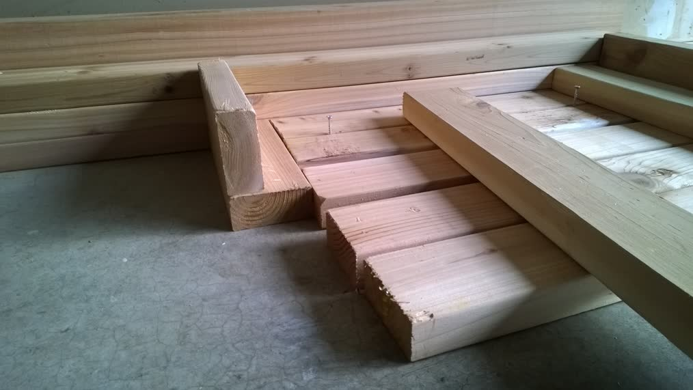
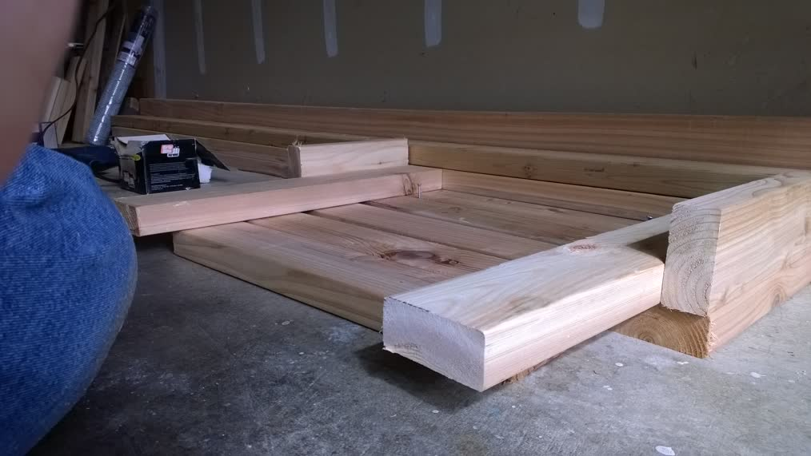
Pahe 4 - Now screw the front / back / bottom together. You will run the deck screws through the front and back of the
worm bin into the side 2 by 4's of the worm bin. You will also be able to put the mesh deck into the frame:
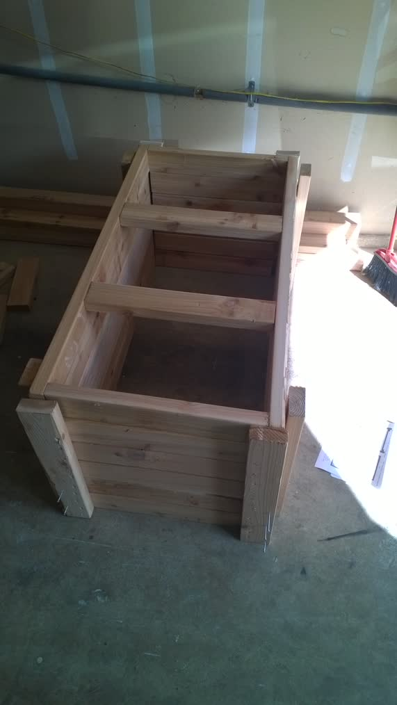
At this point the box was moved to where it is going to stay as it will get rather heavy.
Now cut the 4 X 4 legs and attach. You will need 4 inch deck screws to do this,
and they will probably be number 10 screws (this is the width of the screw). You will also need to use
a larger drill bit for the pilot holes (you *ARE* drilling pilot holes for
the deck screws, correct?). With the box upside down (i.e. the mesh deck on top) attach three legs with 4 of your
4 inch deck screws per leg (you will be using 12 screws total to do this). Since you have three legs on the box it will now
automatically be level. Flip the box over CAREFULLY so that it is standing on the three legs. Attach the fourth leg and
this should ensure that you are still level. Now attach 90 degree metal tabs between the frame and the legs to
strengthen the legs:
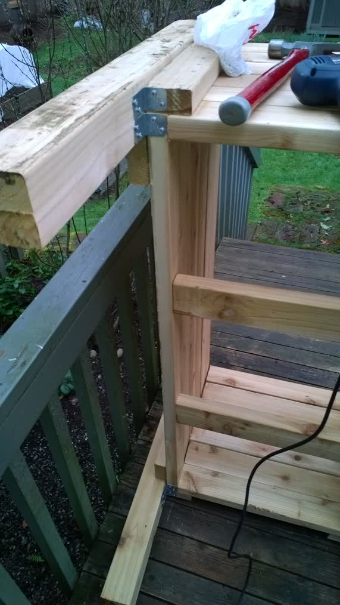
And metal straps on the top to hold that part together:
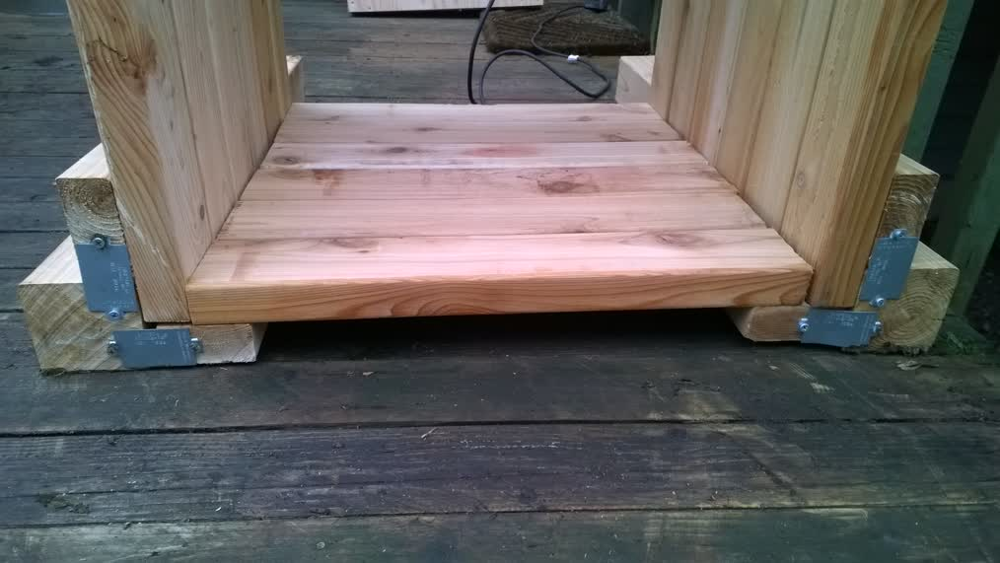
Now make the drawer using that 44 inch long piece of plywood. Attach rails to the legs so that you can slide
the drawer in and out easily. It helps to put Teflon Tape on the
bottom of the drawer to help it move on the rails. Put weather stripping on the top to cover the screws and give some cushion,
with that gap the weather stripping makes now attach the lid with the 4 inch hinges:
Put the mesh in the bottom of the wom bin using 1 inch deck screws and fender washers to hold it. I used a 24 inch wide metal mesh,
cutting it 48 inches long. Then cut a 1 inch square out of each corner so that I could bend the sides of the mesh up and push
it into place:
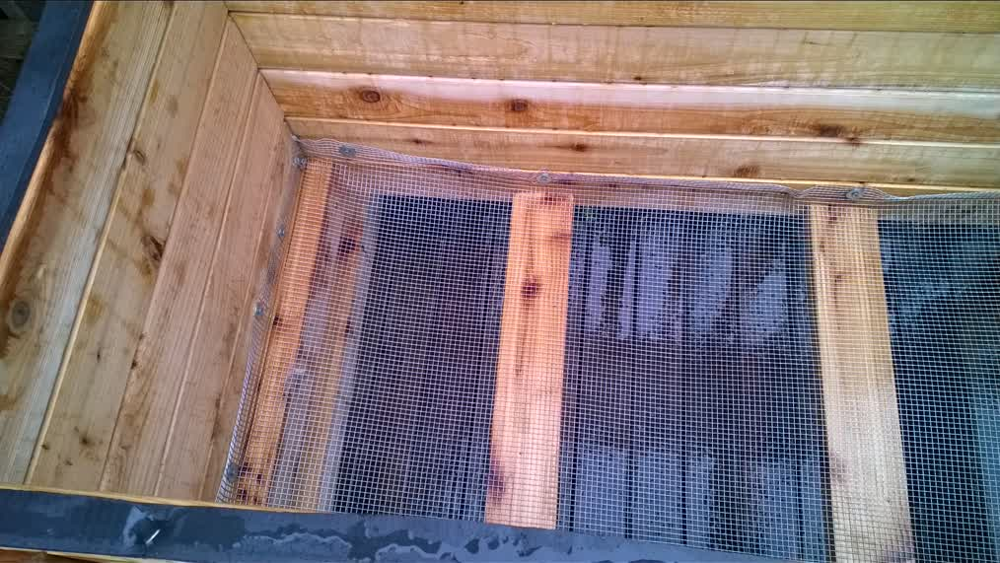
Page 5 - Now put the handles on and you are done
Main Page